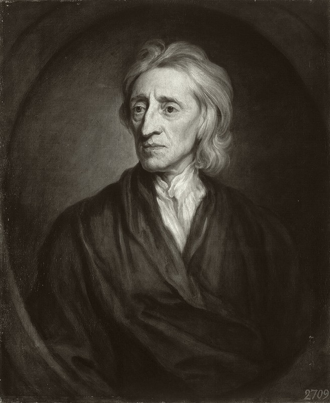

十七世纪英国经验主义哲学家、政治理论家、医生。他奠定了现代经验主义认识论的基石，以"白板说"对抗天赋观念；又在英国革命的风暴中写下《政府论》，为宪政、分权与宗教宽容提供了经典论证。他的思想同时开启了启蒙时代的两条主脉：认识论与政治哲学。
洛克的思想横跨认识论与政治哲学两大领域，彼此呼应：认识论上，他以白板说和经验主义为人类知识重新奠基；政治上，他以自然权利、社会契约与三权分立为现代宪政立法。以下五个概念构成其思想骨架——点击卡片进入详细解读。
心灵出生时是一块白板。一切观念都来自经验——感觉与反省。这是对天赋观念论的系统反驳，也是经验主义认识论的基石。
体积、形状、运动属于物体本身；颜色、声音、气味只存在于知觉者心中。性质与知觉的区分成为近代科学世界观的哲学前提。
政治权力源于被统治者的同意。人们在自然状态中相互协议，建立共同体——政府的合法性来自契约，而非神授或征服。
生命、自由与财产是前于政府的天赋之权。政府的首要职责就是保护这些权利，一旦失职，民众有权反抗。
立法权、执行权与联盟权各归其位。权力必须被分割与制衡——这是"有限政府"的制度设计，深刻影响了美利坚立宪。
洛克用二十年打磨《人类理解论》，又在政治动荡中写下《政府论》两篇。以下四部构成理解其思想的主干——从认识论巨著到宪政经典，再到宗教宽容与教育论，覆盖了他的全部关切。
政治哲学比认识论更容易入手。读《政府论·下篇》——篇幅适中、条理清晰，从自然状态讲到契约到政府解体，一套完整的宪政逻辑。这是理解现代政治观念的最佳入口。
这是洛克思想的学术重心。先读第一卷批判天赋观念、第二卷讨论观念起源（白板说与性质区分），不必一次读完四卷。重点把握"经验是一切知识的来源"这一纲领。
读《论宗教宽容》看洛克如何划定政教界限；读《教育漫话》看认识论如何转化为教育纲领。再向后延伸：贝克莱从内部质疑其物质观念，休谟把经验主义推到怀疑论终点——经验主义的三重奏由此展开。
本站是为系统学习洛克哲学而做的导读。内容以概念为骨架、以著作为血肉——概念页展开每个核心命题的定义、哲学阐述、实例说明与延伸思考；著作页逐部解读核心论点、结构要点和关键段落。
洛克的两张面孔常让人惊讶：写《人类理解论》的是一位冷静的认识论奠基者，写《政府论》的是一位卷入英国革命的论战者。这两面其实相通——他始终在追问同一个问题：什么东西是人凭自身能力就能知道的、做的、建立的，而不必依赖传统的权威？
本站力求在文本基础上呈现其思想的真实面貌：他对人性的乐观并非天真，他对限权的审慎源自亲历的内战与流亡。读懂洛克，也就读懂了现代世界的自我理解。